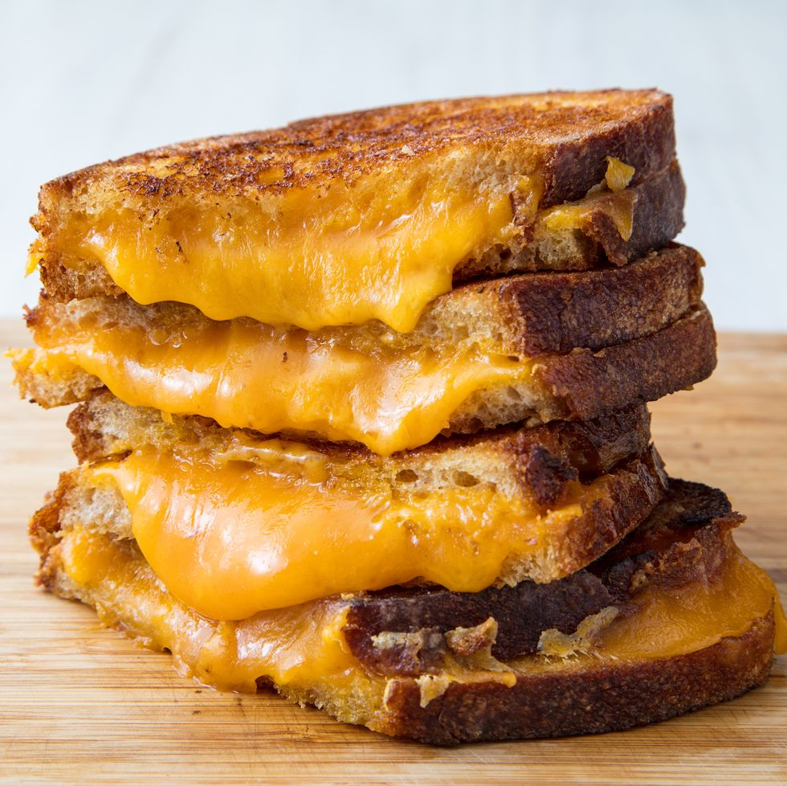

Grilled Cheese

Description
This may be a simple sounding recipe, but if you do it right
this can be one of the best meals ever. make sure to use a nice thick cut of soft bread
and a quality cheese (or two) for ultimpe cheesy goodness.
Ingredients
- Thick sliced bread
- quality cheese
- mayo
Steps
- pre heat your skillet on medium heat
- spread mayo on one half of your slice, place it on he pre-heated pan
- add your cheese (you can let it hang over the bread's edge)
- place second slice of bread with mayo up. add a sprinkle of salt
- Flip the sandwich after a couple of minutes
- Enjoy!